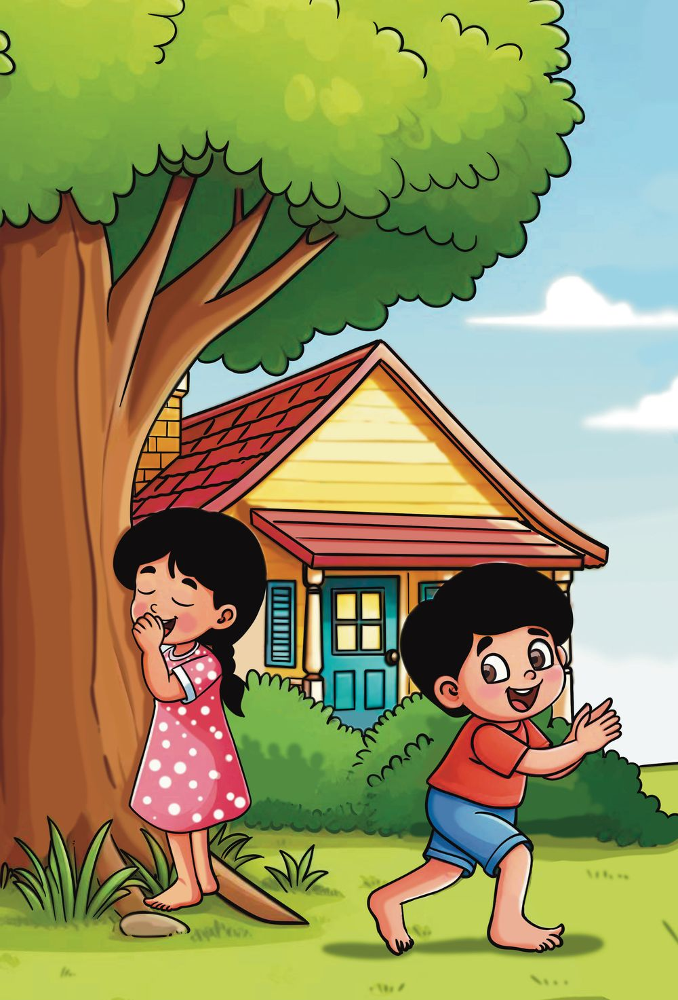
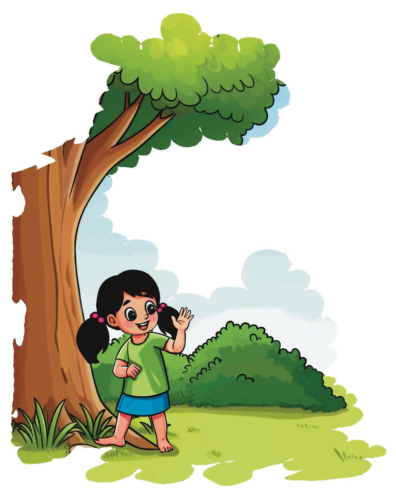
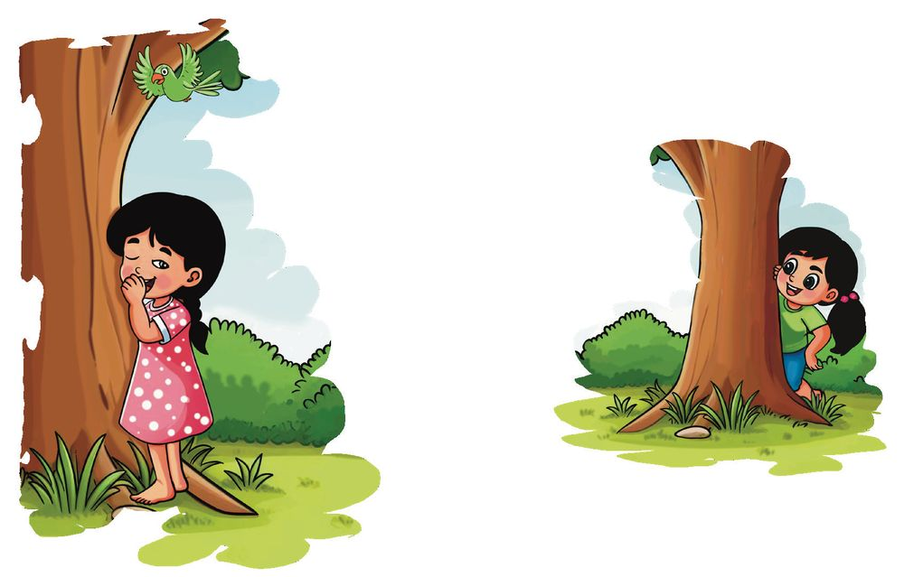
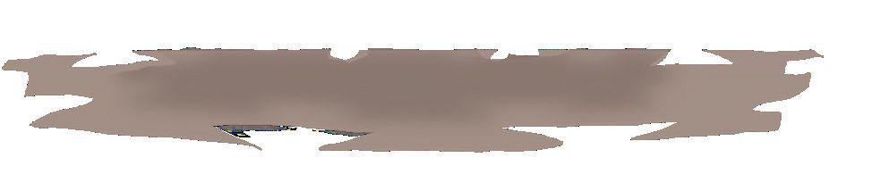
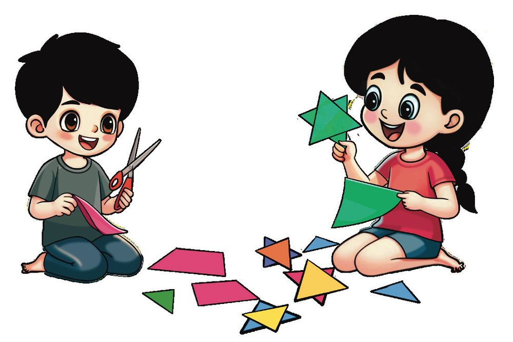
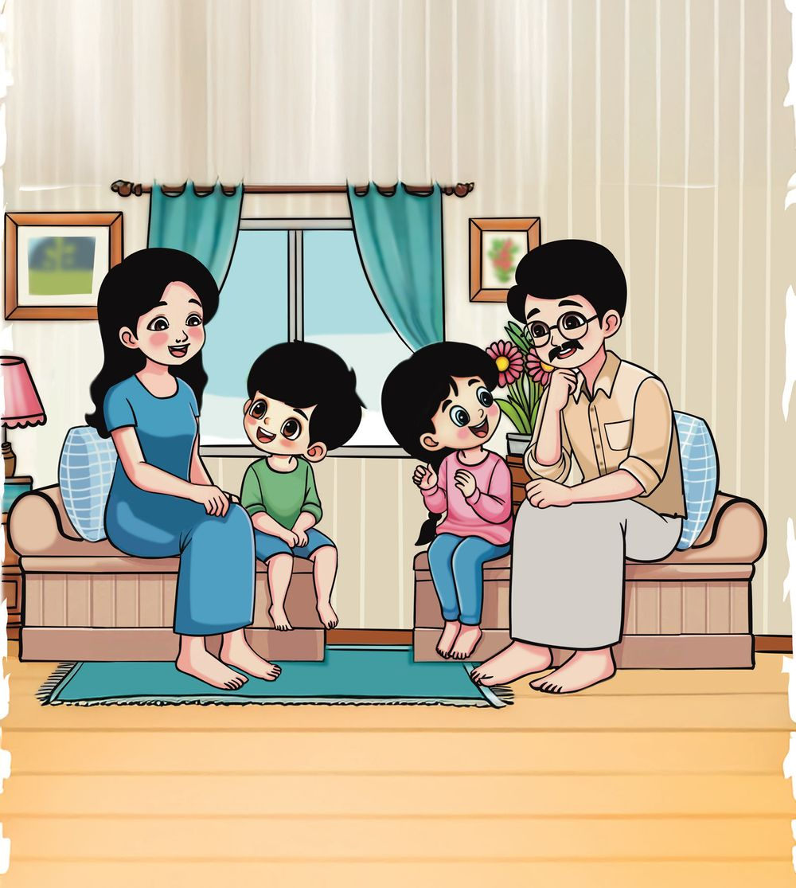

Count upto 50 Niya.
Let's play hide and seek today.
22
Standard
Mathematics
2

Count upto 50 Niya.
Let's play hide and seek today.
22
Standard
Mathematics
2


2 Hide and seek
2
Unit
There are so many trees in Niya's backyard. Lots of shade and so cool.
Let’s hide here.
Hide and Seek
23



Count and play Skipped some numbers .
13, 14, 15, 16, 27, 28, 29, 30.
Write the numbers Niya skipped.
Niya found Jhanvi first. I will count now
Jhanvi counted starting from 30. Write ten numbers she counted, in order.
You too can play with your friends. 24
Standard
Mathematics
2


They heard a noise in the road while playing.
It's OK! Just knocked over the bag! Oh... No…! Sabu bro.
We'll help
2
Unit
They put all the fruits in the bag. Niya counted each each type. Hide and Seek
25

How many each?
Apple
Mango
Orange
They got all the mangoes and oranges, but not apples. There were 45 apples in all. How many more apples to find? Which is the largest number? Which is the smallest number? How many more apples than oranges? 26
Standard
Mathematics
2


Number Game Sohan and Niya are playing a number game.
Sohan got 40 points in the first game. Niya got 7 points more than Sohan. How many points did Niya get ?
7 more than 40
Niya got 44 points in the second game. Sohan got 14 points less than Niya. How many points did Sohan get? 14 less than 44 In the third game, the points they got together is less than 50. The difference between their points is 10. What can be the points each got? Sohan 2
Unit
Niya
Hide and Seek
27


Decoration Niya and Sohan cut different shapes from coloured paper for decorating the classroom.
See what I made. Stars!
They played with the shapes. 10 points for
1 point for
Both of them laid out their pieces. How many points does each get? Nia
+
=
Sohan
+
=
Who got more?
How many more?
To make the points equal, how many of each shape should Sohan cut off? You can also play such a game, cutting out shapes. 28
Standard
Mathematics
2


What’s the age?
Mother, how old are you? Father, what's your age?
5 years more than mother's.
40 years.
How old is the father? Mihal is 3 years old. Niya is twice as old as Mihal.
2
Unit
How old is Niya? Hide and Seek
29


What about their ages after 5 years? Mother : 5 more than 40
-
45
Father
: .....................................................................
Niya
: .....................................................................
Mihal
: .....................................................................
Still you are 5 years older than mother.
But Niya, you are not twice as old as Mihal now!
Write down the ages of everyone in your home. Name
30
Standard
Mathematics
2
Age


Computer game
1
2
3
4
5
6
7
8
9
10
14 15 16 21
23
31 32
25 26 27 28 29 30 34 35
37
39 40
Niya is playing on the computer.
What is the number just after 23? What is the number just before 15? Which number is above 29? Which number is below 39? Write 13, 33, 36, 46 and 49 in the correct boxes on the computer. Below are some boxes on the computer. Fill the empty boxes.
23
29
28 25
2
Unit
35
Hide and Seek
31


Niya and her friends are playing with cards. See how two of them are paired. Pair off the others also.
30
Forty Nine
49
Thirty
18
Twenty One
21
Thirty Seven
37
Eighteen
Write the number each one got on the card.
Write them from the smallest to the biggest.
32
Standard
Mathematics
2
Make pairs. Join same numbers.
28 Ones
4 Tens 6 Ones
3 Tens 1 One
Thirty One Ones
4 Tens 4 Ones
1 Ten 1 Nine
40 Ones
2 Tens 8 Ones
46 Ones
Forty Four Ones
19 Ones
2
Unit
4 Tens
Hide and Seek
33

Let’s make groups Those who got the same number on their cards formed a group. Forty Eight
20 and 16
Twenty Five
2 less than 50
40
36
4 Tens and 8 Ones
4 Tens
25 Forty
Twenty and Five
10 and 15
34
Standard
Mathematics
2

30 and 6
Twenty added to twenty
48
Thirty Six
Write what are on the cards in each group. Group - One
Group - Two
Group - Three
Group - Four
Among these, which is the largest number?
2
Unit
which is the smallest number? Hide and Seek
35